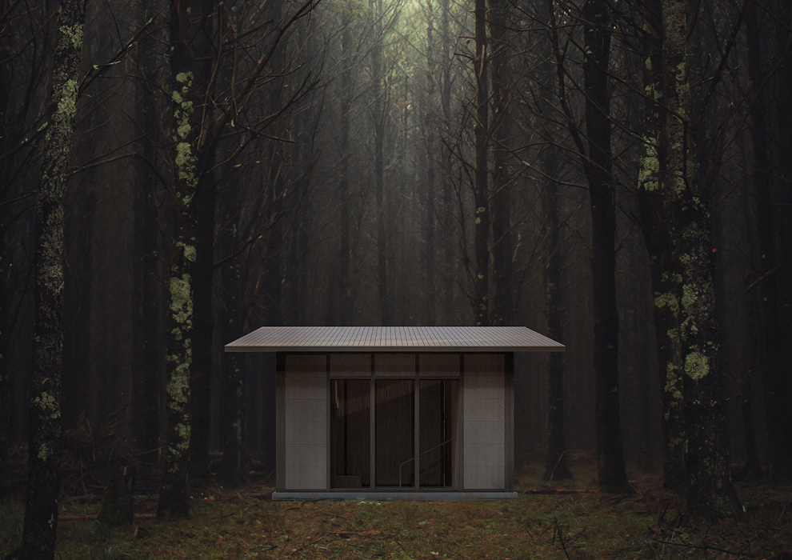
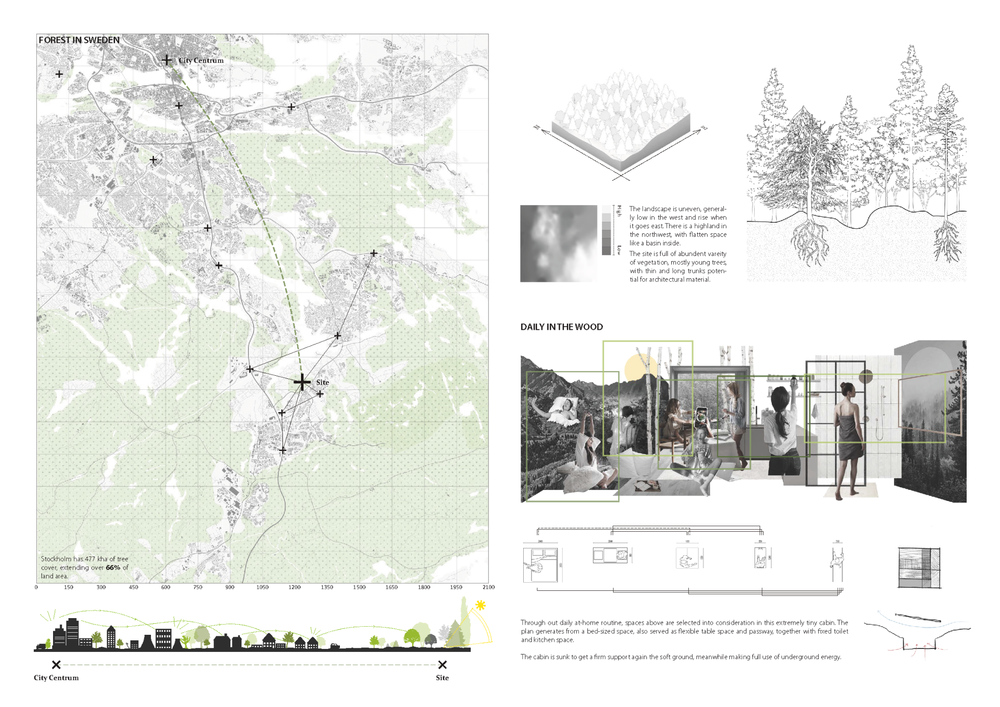
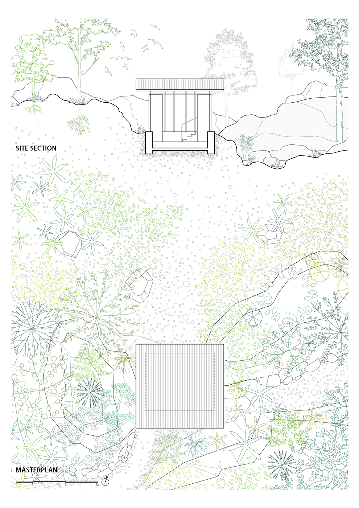
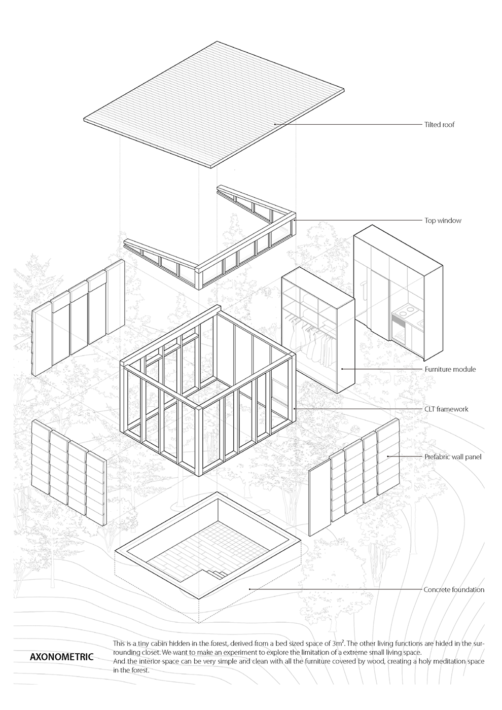
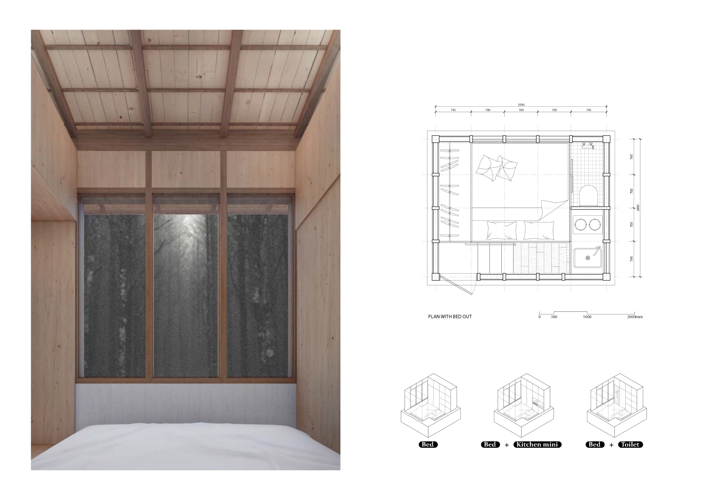
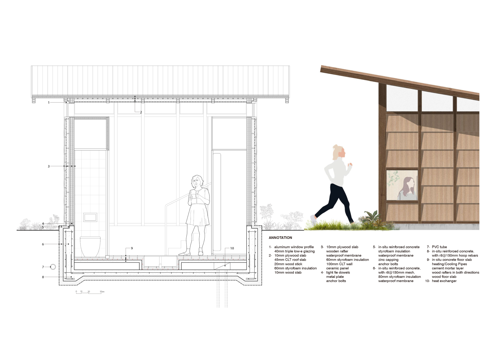

当我们重新思考“家”的意义时，什么才是真正必要且珍贵的元素？归属感和家的温度，又该如何营造？在今天的城市更新与住宅设计中，是否有一些本质的东西，正在被忽视？
面对日益攀升的生活成本，以及新建住房对人类多元需求的疏于回应，我们不禁想探索另一种可能：一种更开放、更共享的居住方式，一种对土地更温柔的使用方式。如果将密集的公寓楼横向铺展，融入大地；如果将私人空间缩减至刚刚好，而把那些昂贵却少用的功能释放出来，成为共享的空间——这样的居住，会不会更贴近我们真正渴望的生活？